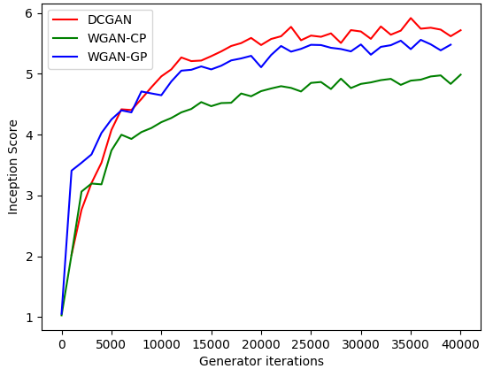

GAN
区别分析
GAN：作为生成对抗网络的开创者，GAN具有创新性的训练方法和广泛的应用领域，但存在训练不稳定、模式崩溃和梯度消失等问题。
DCGAN：在GAN的基础上，DCGAN引入了深度卷积神经网络的结构，提高了图像生成的质量和稳定性，但并未完全解决GAN的固有问题。
WGAN-GP：WGAN-GP通过改进损失函数和引入梯度惩罚项，有效避免了GAN中的模式崩溃和梯度消失问题，提高了训练的稳定性和生成样本的多样性。

结论
- 结论 1
-
Inception Score（IS）是一种量化评估GAN生成图像质量的指标，它依赖于预训练的Inception Net-V3对生成图像的分类能力。由于DCGAN并无对权重参数的切剪，Inception模型能够更准确地将其分类到某个类别，导致生成的p(y|x)分布更加集中，熵值更低，从而得到更高的IS评分。
- 结论 2
-
相比于Wgan-cp直接对参数权重进行检测切割，Wgan-gp引入了梯度惩罚措施，故Wgan-gp的图片相对于Wgan-cp的模型评分更优，且无因为参数权重切割导致输出图片存在白斑模糊。
- 结论 3
-
Dcgan未加入权重切割以及梯度惩罚，故训练速度更快，但同样的，其稳定性相对于其他两种模型来说较差
写在最后
GAN怎么训练才能更加稳定。目前为数不多的理论是关于网络的Lipschitz 连续性。研究者们相信 ，如果网络满足Lipschitz 连续性，那么GAN的训练会比较稳定。
简单来说，如果一个函数的变化是有界的，那么我们说它是Lipschitz连续的。而对于一个函数，它的变化率通常可以用梯度来表示。所以我们自然地想到在训练GAN的过程中，让梯度有界。所以就出现了对GAN中的梯度进行截断、对梯度归一化、对梯度做惩罚项等等操作。
But，所有这些操作都是“强行”让网络看起来是Lipschitz 连续的。所以它们各自的有效性并不能轻易看出。对GAN还需要更加深入的理解来解决GAN网络的稳定性问题以及结果模糊的问题。